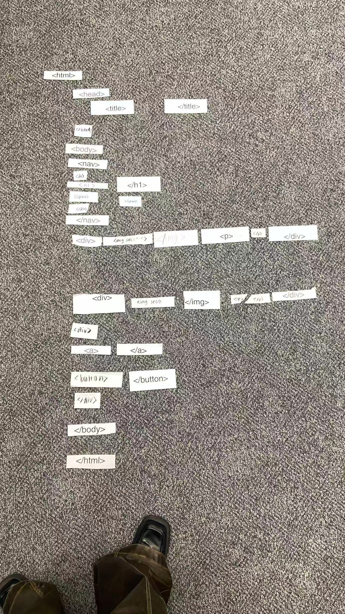

The HTML play exercise made coding feel much more physical and
spatial. Instead of looking at tags on a screen, laying them out by
hand made me think more carefully about structure, hierarchy, and
nesting. It turned HTML into something almost architectural.
What also stood out to me was how important color-coding and
indexation was for me, on vscode. I relied on it for clarity and to
quickly glance over code snippets. When there is no color and
indexation, it quickly became confusing. And I was missing closing
tags and mixing up elements.
